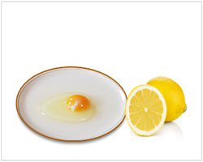
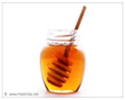
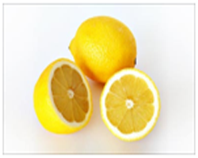

Masks for Oily Skin

1. Egg white with 1 tablespoon honey. Mix both together and apply with a brush. Wash after 7-10 minutes.


2. Mix 1 tablespoon orange peel powder with 1 tablespoon honey and 1/2 teaspoon lime juice. Apply and leave for 10 minutes. Wash.
3. Take 4 tablespoons mint paste and grind fresh mint leaves, 1/4 cup ripe papaya pulp, 2 teaspoons gram flour and 1/2 limejuice. Mix and apply. Wash after 15 minutes.